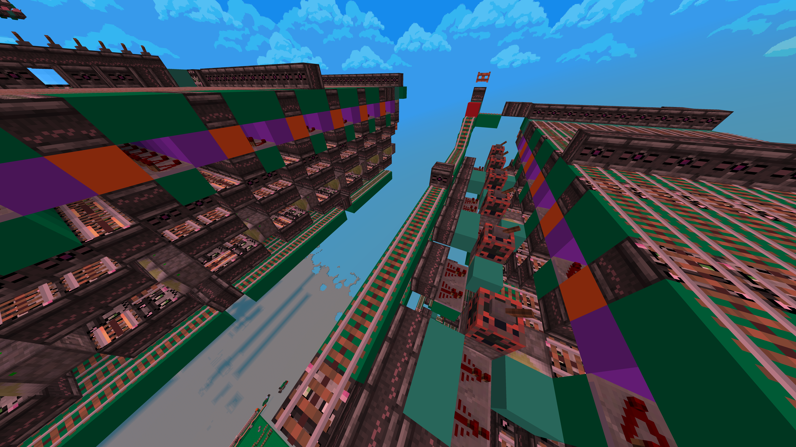
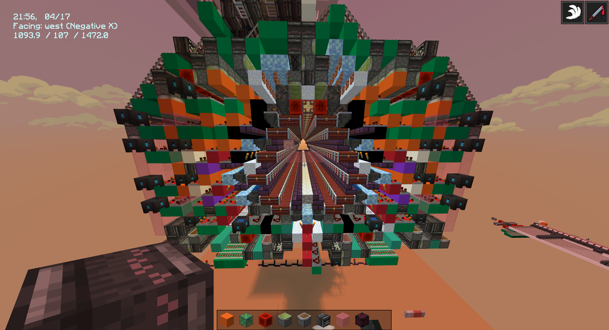
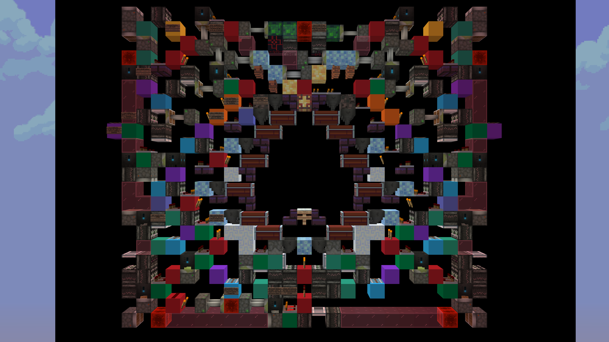
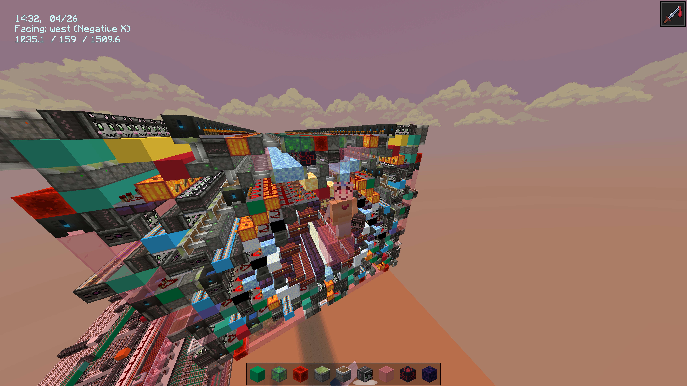
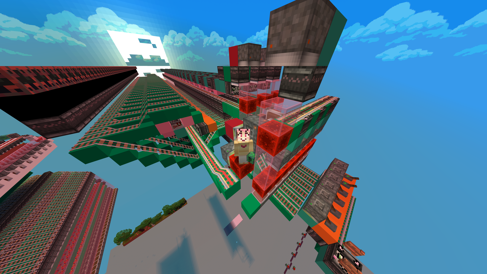
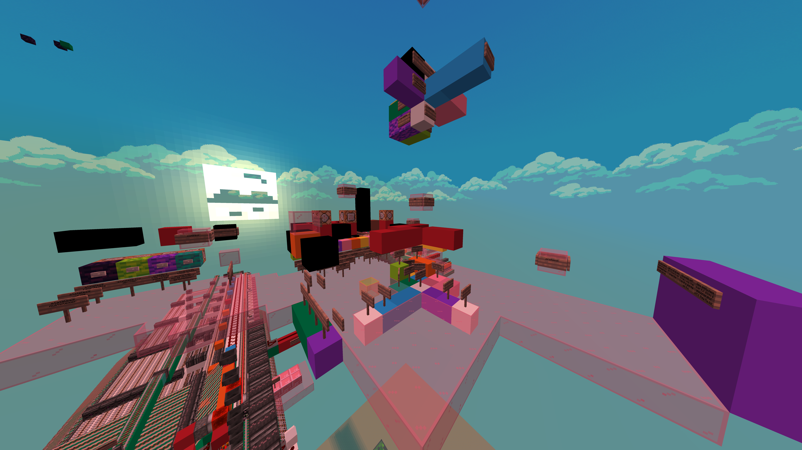
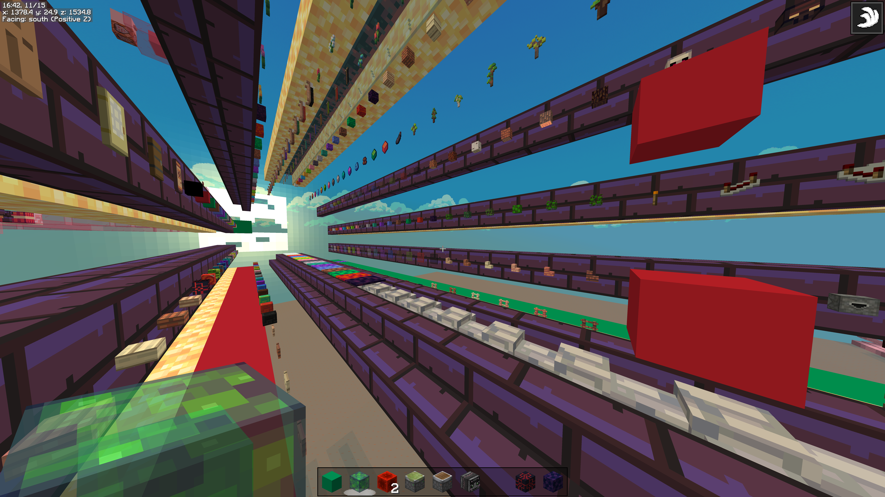

Spidersort binary system gallery
Core memory NVRAM decoder
An odd cross between real world magnetic core memory and core rope memory, this decoder takes up 3x1x10 blocks per bit, and takes 3-4/10ths of a second to do, a read operation. The reads are non-destructive, but writing can only flip a bit, not set it, so the write signal is propagated backwards, requiring some odd external wiring. Unlikely I'll ever use it, but the idea was sweet.
Early prototype chest hall
An early prototype for the chest hall. My biggest stretch goal for this system has been to have 12 chests per 'slice' of the chest hall-it's still 58ish meters long, with that many chests. Most systems only have 8, and I don't wanna walk that far.
An old hall that was square
In hindsight this hall has a million things wrong with it. I'd explored a bunch of fundamentally flawed ideas that with it that I've since abandoned. It's still my favorite looking version, though.
Square hall tiled out
First working chest hall
It was an insane moment the first time I dumped a packet of items into this hall and watched it pull the code from the item, select the right chest coordinates, read the fill levels on the chest, do the destination computation, organize the packet, feed the items to the chest, and shut itself back down. Took me more than a year to get there. 'Course, it was a slow, unreliable, piece of junk, but so much went into that-everything I build is extremely modular, so I got about a dozen really useful modules doing the R&D to get there.

Bitmask based read only binary decoder
This one might be the component I'm most proud of. Stateless binary decoders normally work by inverting the signal, then processing both S and S⁻¹ from separate rail lines in such a way to select only the correct slice. This design uses different timings to send both S and S⁻¹ on the same rail lines which allows for a smaller, faster(quarter second) decoder at the cost of some additional lag.
Instant intermediate storage
I've been working on a call system where you can throw an item on the ground in
the chest hall, and it'll give you a packet of 1728 of that item. I don't wanna
stand around waiting for it to process the item, so I've set myself a cutoff of
4 seconds. However, bulk storages are always going to be slow, as they have
different priorities, to handle moving and storing millions of items without
causing lag. This stores up to 9 of those packets for each item, and uses
exploits totally intended with update order to react instantly
and effectively teleport packets to the player. From signal to item arriving,
it's a quarter second.
Planning hub
Yeah, this makes sense to exactly one person ever, but it's a scale model of the facility, with notes, issues, ideas, teleport buttons, etc. I swear it's well organized.
Sorted hall
Honestly, this is super lazy, but it's the working plan for how the items will be sorted in the final chest hall. The position actually determines the code for the item, as the binary is actually a coordinate. (check the about page for more info)
50ish versions of the chest hall
I always fantasized about a minecraft version of git. You can probably see why.